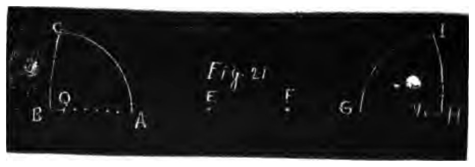
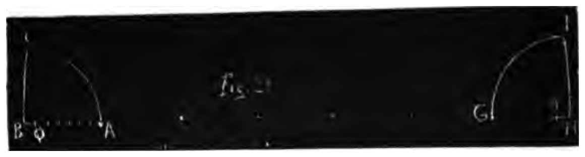
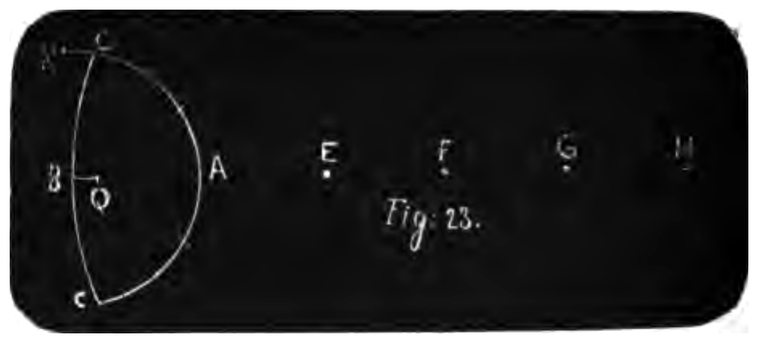

§§ 69–70: Divisione d’una distanza in un numero qualunque di parti eguali¶
69. Prob. Dividere una distanza \(AB\) in un qualunque numero di parti eguali.
Sol. Da un esempio, o due si rileverà meglio la regola generale (fig. 21).


Es. I. Sia la distanza \(AB\) da dividersi in cinque parti eguali. Ad essa si aggiungano in linea retta le quattro distanze eguali alla medesima \(AE, EF, FG, GH\) (§ 65), in maniera che resti quintuplicata in \(BH\), ossia moltiplicata per tante unità, in quante parti si vuole dividere la medesima. Cogli estremi \(B\) ed \(H\) come centri, e col raggio \(AB\) della lunghezza della distanza, che si vuol dividere, si descrivano i due archi indefiniti \(AC, GI\). Cogli stessi centri \(B\) ed \(H\), e col raggio \(BH\) si descrivano i due archi \(HI, BC\). Col centro \(C\), e col primo raggio \(AB\) si descriva un arco indefinito \(BQ\). Col raggio \(CI\), centro \(H\), si descriva un arco, che tagli l’arco \(BQ\) in \(Q\). Sarà la distanza \(BQ\) sulla direzione della \(BA\), e sarà la quinta parte di essa.
Se adesso alla \(BQ\) si aggiunge l’eguale \(Qq\) (§ 64), quindi le altre eguali \(qr, rs\), si avranno determinate tutte le quinte parti della \(BA\).
f. 0063 · p. 38Es. II. Se si vuole dividere la \(AB\) in sette parti (fig. 22);


si formi la \(BH\) sette volte maggiore della \(BA\). Cogli estremi di questa cioè coi punti \(B\) ed \(H\), e col raggio \(AB\) si descrivano gli archi indefiniti \(AC, GI\). Cogli stessi centri \(B\) ed \(H\), e col raggio \(BH\) si descrivano i due archi \(HI, BC\). Col centro \(C\), e col primo raggio \(AB\) si descriva un arco indefinito \(BQ\). Col raggio \(CI\), centro \(H\), si tagli quest’arco in \(Q\); sarà \(BQ\) sulla direzione della \(BA\), e sarà la settima parte di essa.
Dim. Essendo il triangolo \(CQI\) di lati rispettivamente eguali al triangolo \(IHQ\); sarà l’angolo \(CIQ = IQH\) (8, lib. I), quindi \(CI\) parallela ad \(HQ\) (28, lib. I). Essendo poi la \(CI\) parallela anche alla \(BH\) (§ 23), sarà il punto \(Q\) sulla \(BH\). Quindi avendo i due triangoli isosceli \(CBQ, CBH\) un angolo alla base comune in \(B\); saranno simili (5 e 32, lib. I; 4, lib. VI), e sarà \(HB : BC :: BC : BQ\), ossia \(HB : AB :: AB : BQ\). Quante volte dunque la \(HB\) sarà maggiore della \(AB\), altrettante la \(AB\) sarà maggiore della \(BQ\).
Sol. II. Si voglia dividere la \(AB\) per esempio in cinque parti (fig. 23).


Determinata, come nella Soluz. I, la \(BH\) cinque volte maggiore della \(AB\); col centro \(H\), e col raggio \(HB\)
f. 0064 · p. 39si descriva un arco indeterminato \(CBc\). Ora col raggio \(BA\), e col centro \(B\) si descriva la semicirconferenza \(cCK\) (§ 64). Collo stesso raggio \(AB\), e col centro \(C\) si descriva l’arco \(BQ\). Col raggio \(CK\), e col centro \(B\) si tagli quest’arco in \(Q\); sarà \(BQ\) la quinta parte della \(BA\) posta sulla stessa direzione.
Dim. La retta \(BK\) sarà sulla continuazione della \(Bc\) (15, lib. IV). Fatte perciò le dovute sostituzioni nel § 22, si avrà \(KC \cdot BH = (BC)^2 = (AB)^2\); e quindi (17, lib. VI) \(BH : AB :: AB : KC\). Ovvero \(BH : AB :: AB : BQ\). Quanto dunque la \(BH\) sarà maggiore della \(AB\), tanto la stessa \(AB\) sarà maggiore della \(BQ\); e se sarà \(BH = 5\,AB\), sarà anche \(AB = 5\,BQ\). Per l’eguaglianza poi dei lati tra loro nei due triangoli \(BKC, BCQ\) si avrà l’angolo \(KCB = CBQ\) (8, lib. I). Ma all’angolo \(KCB\) è pur eguale l’angolo \(CBH\) (§ 22). Dunque la \(BQ\) è sulla direzione della \(BH\).
70. Si vede chiaramente, che quest’ultimo Problema (§ 69) può molto servire nella pratica per dividere in linee un piede dato, e già diviso in pollici; poichè col metodo di esso essendo \(BH\) eguale a dodici pollici, riuscirà \(BQ\) eguale ad una dodicesima del primo pollice \(AB\), cioè ad una linea. Nella stessa maniera il metro già diviso in decimetri si potrà suddividere in centimetri. Se sarà già descritta la retta \(AB\), sulla quale si ha a trovare il punto \(Q\); l’operazione sarà più semplice, poichè senza descrivere col centro \(C\), raggio \(AB\) l’arco \(BQ\), basterà tagliare in \(Q\) la data retta \(AB\) colle aperture di compasso indicate qui sopra.